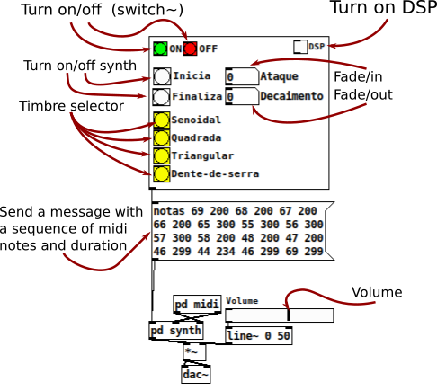
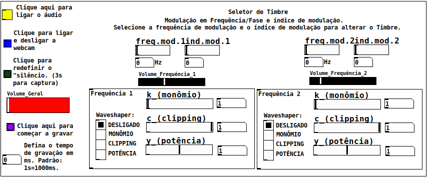
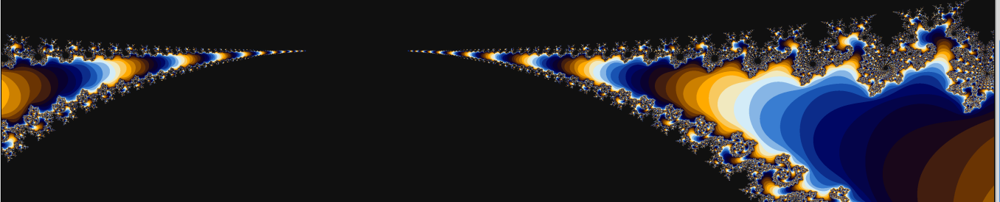

Multi-Timbre Synthesizer
This synthesizer was built as a Program Exercise (EP) to Computer Music class, from the Institute of Mathematics and Statistics of the University of São Paulo / BR, by professor Dr. Marcelo Queiroz.

How do I download Pure Data?
Miller S. Puckette's "vanilla" distribution of PdLast release: Pure Data 0.51-3
Released 20/11/2020
Required extensions: Zexy
Download
If you have a synth keyboard, plug it into you computer and follow this steps.
Else if, you don't have a keyboard, see this instructions.
Else if, you want to build a QWERTY synth keybord, see this Youtube video from LWM Music channel.
Source code

Musicam - Webcam based digital instrument
Digital instrument based on oscilator's frequency manipulation using Webcam images

Source code
Required extensions
Windows and MAC users: If you want to run this patch quickly, you can download the DMG packages or the EXE installer of Purr-Data HERE.
Performances
By Claudinei Sevegnani (click on images to see)Mandelbrot Fractal
Performance test using different parallel configurations.

Source code
This work contains some of programs-exercises of class MAC5742 - Introduction to Concurrent, Parallel and Distributed Programming (2020) - Institute of Mathematics and Statistics, São Paulo University (IME-USP).
Authors
Carlos Eduardo Leal de Castro (me)
Felipe de Lima Peressim
José Luiz Maciel Pimenta
Luis Ricardo Manrique
Rafael Fernandes Alencar
Description
The Mandelbrot Set is the set of all complex points \(\mathbb{C}\) such that the sequence \( \{z_n\}_{n\in(\mathbb{N}\cup\{0\})} \), given by \(z_{n+1}=z_n^2+c\), with \(z_0=c\in\mathbb{C}\), where this sequence remains bounded. That is, for any \(z\in\mathbb{C}\) that remains on this set, there \(\exists R_{max\) such that \(\vert z \vert \leq R_{max}\).
Performance tests
We did performance tests to compare all the methods used here: sequential, pthreads, openmp, openmpi, cuda, openmpi+openmp and openmpi+cuda. In these experiments, we measure the average time of 15 executions on each method, varying 3 different parameters:
- Dimensions (x,y) of grid and blocks (CUDA);
- Number of Threads (Pthreads and OMP);
- Number of processes (OMPI).
| Algorithm | Executions |
|---|---|
| Sequential | --- |
| OpenMP | 1 to \(2^{10}\) threads |
| Pthreads | 1 to \(2^{10}\) threads |
| CUDA | \(2^2\) a \(2^{6}\) clock size |
| CUDA+OpenMPI (one node) | Block size \(n = (2,4,...,32)\), for each \(n, \ 2^2\) to \(2^6\) clock size |
| CUDA+OpenMPI (two nodes) | Block size \(n = (2,4,...,64)\) in two nodes, each one with \(\frac{n}{2}\) processes, for each \(n, \ 2^2\) to \(2^6\) block size |
| OpenMPI (two nodes) | Block size \(n = (2,4,...,32)\) |
| OpenMPI (two nodes) | Block size \(n = (2,4,...,64)\) in two nodes, with \(\frac{n}{2}\) processes each |
| OpenMPI+OpenMP (one node) | Block size \(n = (2,4,...,32)\), for each \(n, \ 2^2\) to \(2^6\) threads |
| OpenMPI+OpenMP (two nodes) | Block size \(n = (2,4,...,64)\) in two nodes, with \(\frac{n}{2}\) processes each and, for each \(n\) we have \(2^2\) to \(2^6\) threads |